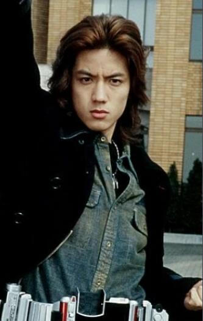
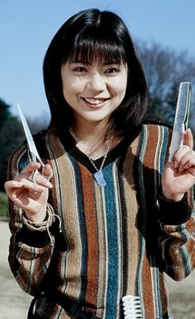
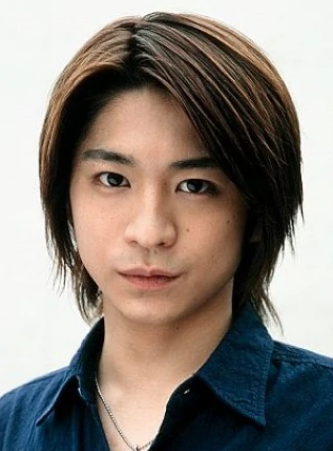
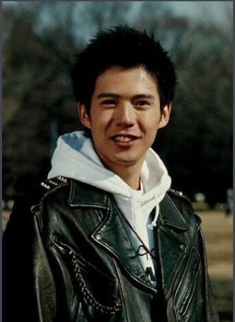
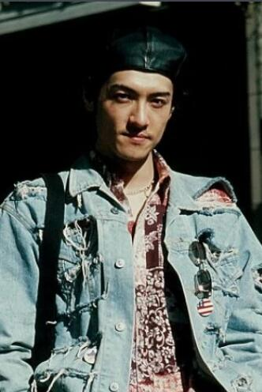
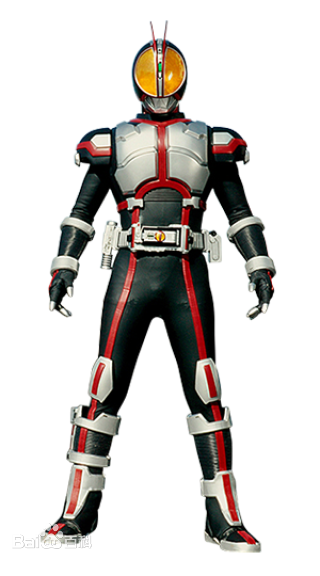
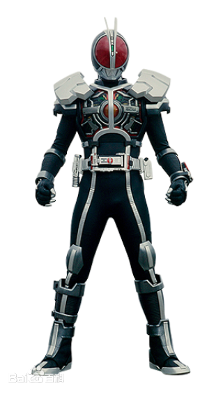
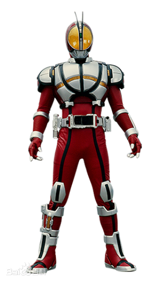
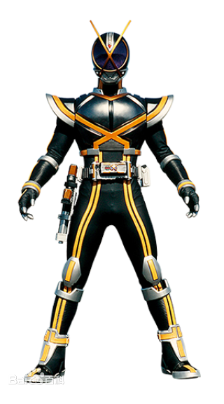
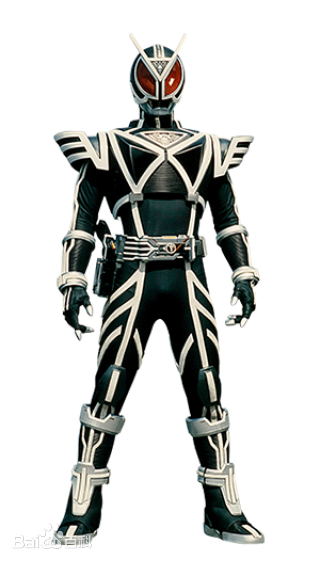

作品简介
“流星塾”出身的“园田真理”，某一日收到了来自养父寄来的不明物品——Faiz Gear和其专属机车。为了问明父亲的用意，真理前往位于东京的巨大企业Smart Brain拜访父亲，在途中遇上了旅人乾巧。因真理存放Faiz Gear的旅行袋和乾巧被偷走的旅行袋一样而产生误会，正在争执的时候，两人被突然出现的怪物奥菲尔诺（Orphnoch）袭击，危机之下，乾巧使用了Faiz Gear变身成为了假面骑士Faiz……
另一边，木场勇治是一位家境富裕、家庭美满的幸福青年，但突如其来的一场车祸夺走了勇治双亲的性命，也令勇治陷入昏睡。两年后，在勇治心跳停止，医生宣告死亡的当晚，他觉醒了奥菲尔诺的力量复活了过来。但他发现在自己昏迷的两年间，自己父母的财产被伯父一家夺去，与自己相恋的女友也背叛他与他的堂兄在一起。无穷的绝望和愤怒之下，勇治变化成了马型奥菲尔诺……
登场角色
主要角色
| 图片 | 简介 |
|

乾巧 |
半田健人饰 "俺には夢がない。でもな、夢を守ることはできる" 我没有梦想，但我可以守护梦想 狼俄尔以诺的人类态。假面骑士Faiz与假面骑士Delta[乾巧版]的装着者 性格冷淡且笨拙，为了直接表达自己的想法，经常会给对方留下不好的印象。但是本性温柔，充满正义感。极度的猫舌，热的食物必须花时间冷却后才能吃。 虽然说话招人讨厌，但还是会向别人伸出手来，这样的性格对经常发生冲突的草加雅人，以及虽一度互相理解却很快作为对手诀别的木场勇治也没有改变。 小时候遭遇事故而作为俄尔以诺觉醒，但是对由于这种不曾期望的力量而失去自我，无意识中背叛他人而恐惧，拒绝他人，不抱梦想。作为战士持续战斗，也是为了否定自己是俄尔以诺。 漫无目的骑着摩托旅行之时，在九州遇到园田真理，进而变身成Faiz与俄尔以诺战斗。起初排斥的巧，在与真理及同样在九州遇到的启太郎不断交流，并寄居在启太郎老家“西洋洗衣铺 菊池”后，决定为了守护他人的梦想战斗。 |
|

园田真理 |
立志成为美容师的女性。小时因父母在火灾事故去世被花形所领养，与流星塾的伙伴一起成长。 好胜且会明确表达自己意见的性格，无论对方是谁都会毫不让步地争执。只是会对以共苦过的流星塾的伙伴为首的放心的人展现出温柔的一面，与巧、启太郎等也慢慢地结下强烈的牵绊。此外擅长料理也常担任料理的值日人员，但也会有加入少量的调味料之类的粗心的做法。 因为意外的事被海堂直也喜欢上，多次被表白，但她却没有那个意思，反被木场勇治吸引。 实际上在流星塾同学会之际，被毕业生之一的青沼=树懒俄尔以诺与龙俄尔以诺 魔人态袭击，失去性命。其后与同样被袭击的伙伴们一起被Smart Brain埋入俄尔以诺的记号复苏，但同时因记忆被篡改而忘记此事实。此外因未适应俄尔以诺的记号，几度尝试使用”Faiz驱动器“变身但都失败。 在九州生活时收到了养父花形送来的Faiz设备与”机动摩人“，为了解情况决定去东京。途中偶遇了巧与启太郎，在启太郎老家“西洋洗衣铺 菊池”住着工作，为了实现梦想开始在美容室打工。 |
|

木场勇治 |
泉政行饰 马俄尔以诺的人类态。假面骑士Faiz与假面骑士Kaixa[木场勇治版]的装着者。“消失的天堂”的时间线中假面骑士Orga的装着者。 遭遇不幸的交通事故，觉醒为原生的俄尔以诺的青年。 性格温厚认真，平等待人。其好青年做派使园田真理也爱慕着他。但因过于认真，所以有些认死理，对背叛自己、判断为敌人的人采取毫不留情的行动，同时也有着激情家的一面。 因交通事故卧床不起，一度丧命，作为俄尔以诺觉醒并复活，但在经历一系列变故并袭击变心的恋人与堂兄后，恢复理性的木场想要继续作为人类，开始考虑人类与俄尔以诺的共存。 因这样的行动，木场被Smart Brain看作叛徒，多次被狙击，但木场的决心没有改变，和同样是俄尔以诺的长田结花、海堂直也共同生活，与不为人知的恶意的俄尔以诺们战斗着。 |
|

菊池启太郎 |
沟吕木贤饰 “消失的天堂”的时间线中假面骑士Kaixa[菊池启太郎版]的装着者。 东京的老字号洗衣店西洋洗衣铺 菊池的独子。父母远渡非洲，自己“追求更大的助人为乐”关店旅行着。早前就常和网友“结花小姐”互相传达近况，但实际相遇不久才发现对方是长田结花 虽有“为了大家都能幸福而帮助别人”的宏伟梦想，但无论好坏为人很好，也会接受被别人认为是被利用的事情。此外正义感也会暴走，甚至为了代替不想与俄尔以诺战斗的乾巧与园田真理，自己去战斗而偷出了Faiz设备。 但其天生的正义感与为人着想的温柔是确实的，肉身面对着俄尔以诺，在知道了巧与结花是俄尔以诺后，对他们的友情和爱情也不会改变，也不会区分人类与俄尔以诺，只要幸福就好了。这对摸索“人类与俄尔以诺共存”的巧也产生了很大的影响。 在旅行地九州的干洗店打工时，与巧和真理相遇后一起回东京。以帮忙店里为条件，三人同居。 |

草加雅人 |
村上幸平饰 ←健康的笑容 假面骑士Kaixa、假面骑士Faiz[草加雅人版]与假面骑士Delta[草加雅人版]的装着者。 流星塾的毕业生。适应了Smart Brain埋入的俄尔以诺的记号。 小时是个爱哭鬼，被比自己小的园田真理所救，但在庆泉学院大学担任网球部、马术部、击剑部的部长。对武术似乎也有心得，在与俄尔以诺的战斗中多次展现。 乍一看有礼貌，但实际表里如一，对其认为的“不喜欢自己的人”毫不留情地想排除。也有到处奔走算计目标，反复谎言离间他人等狡猾的一面。此外，对从流星塾时代开始就抱有好感的园田真理的执念相当强烈，即使被拒绝也没有改变，反而更加扭曲。 流星塾的毕业生被人体实验之际，在记忆被篡改前逃出，所以记得那天发生的惨剧。从此对俄尔以诺抱有非常强烈的憎恶，认为其即使不袭击别人也应灭亡。另外，在抱着被袭击的真理之时因左手染上她的血而受到心理创伤。之后有时会看到左手变血红的幻觉，患上湿纸巾不离手的洁癖症。 在大学与真理再会，得到“Kaixa驱动器”后投身与俄尔以诺的战斗。但对战斗完全没有迷茫。 |
|
长田结花 |
加藤美佳饰 鹤俄尔以诺的人类态。 樱林女子高中篮球部所属女高中生。雪天在楼梯上滑倒而毙命，觉醒为原生的俄尔以诺。 与菊池启太郎一直是通过手机短信互相联络的网友。但是，两人实际上相识后，有一段时间并没有注意到邮件上的收件人是启太郎。 从小失去双亲被收养，被义父母和义妹道子折磨，在学校里成为孤立的目标，在凄惨的环境中长大。也正因为如此，变得畏首畏尾，胆小怕事，对人类怀有强烈的仇恨。然后，这种感情以被相信道子谎言的义父母赶出家门为契机爆发，以俄尔以诺之力将社团的伙伴们了结。 其后，木场勇治伸出援手，与同为俄尔以诺的海堂直也共3人开始同居。虽然与木场一样作为人类生存，但偶尔也无法抑制对人类的憎恨，因为除恶或不可抗力将人类亲手了结。 |
|

海堂直也 |
唐桥充饰 蛇俄尔以诺的人类态。假面骑士Faiz[海堂直也版]与莱欧骑兵[海堂直也版]的装着者。 在咖啡店的时候被枪乌贼俄尔以诺袭击，作为俄尔以诺复活的青年。 曾在山手音乐大学专攻古典吉他，期间在许多竞赛中获奖的天才，但在嫉妒其才能的教授制造的事故中左手负伤，作为吉他手的梦想破灭。或许是为隐藏伤口，左手戴着黑色手套。原本生活在普通公寓，但在觉醒为俄尔以诺后，与木场勇治、长田结花一起在高级公寓同居生活。 知道觉醒为俄尔以诺之时也没怎么惊讶，开朗而自由奔放。其态度使结花产生“像孩子一样纯粹而容易受伤”的好感，但另一方面，与木场也有很多冲突。其内心比结花想象的还要纤细，拥有着即使被恶语中伤也不放弃困扰之人的真正温柔，对作为人类生存的木场，也由衷尊敬着。 |
Smart Brain关系者
...
幸运四叶草
...
流星塾关系者
...
其他角色
...
假面骑士
假面骑士Faiz
原文：仮面ライダーファイズ/Masked Rider Faiz
装着者：乾巧（皮套演员：高岩成二&永濑尚希（代役）等，CV：半田健人）；赤井（皮套演员：高岩成二，CV：山崎胜之）；海堂直也（皮套演员：高岩成二，CV：唐桥充）；琢磨逸郎（皮套演员：高岩成二，CV：山崎润）；草加雅人（皮套演员：高岩成二，CV：村上幸平）；木场勇治（皮套演员：高岩成二，CV：泉政行）；乾巧（消失的天堂）（皮套演员：高岩成二，CV：半田健人）；乾巧（异形之花）；勇介；乾巧（913）
| 图片 | 简介 |
|

假面骑士Faiz |
Faiz 原文：ファイズ/Faiz 使用“Faiz手机”，输入变身代码“555”后闭合并插入“Faiz驱动器”后变身的Faiz的基本形态。 |
| 版本 | |
|

假面骑士Faiz 加速形态 |
加速形态 原文：アクセルフォーム/Axel Form Faiz时将“Faiz手机”的“Faiz指令内存”替换为“Faiz加速”的“加速内存”后变身的Faiz的超速形态。 |
|

假面骑士Faiz 爆裂形态 |
爆裂形态 原文：ブラスターフォーム/Blaster Form 将“Faiz手机”插入“Faiz爆裂者”并输入变身代码“555”后变身的Faiz的最终形态。 |
假面骑士Kaixa
原文：仮面ライダーカイザ/Masked Rider Kaixa
装着者：高宫航太（皮套演员：伊藤慎）；西田清高（皮套演员：伊藤慎）；神道贵久（皮套演员：伊藤慎，CV：近田慎太郎）；草加雅人（皮套演员：伊藤慎&高岩成二（与马俄尔以诺交战时，代役），CV：村上幸平）；影山冴子（皮套演员：伊藤慎，CV：和香）；木场勇治（皮套演员：伊藤慎，CV：泉政行）；草加雅人（消失的天堂）（皮套演员：伊藤慎，CV：村上幸平）；菊池启太郎（消失的天堂）（皮套演员：高岩成二，CV：沟吕木贤）；草加雅人（异形之花）；未知×2 [#小说中的量产]；东野[#仅提及]；西岛；真由；草加雅人（913）
| 图片 | 简介 |
|

假面骑士Kaixa |
Kaixa 原文：カイザ/Kaixa 使用“Kaixa手机”，输入变身代码“913”后闭合并插入“Kaixa驱动器”后变身的Kaixa的基本形态。 |
假面骑士Delta
原文：仮面ライダーデルタ/Masked Rider Delta
装着者：德本恭辅（皮套演员：押川善文）；新井贤（皮套演员：押川善文）；河内勇树（皮套演员：押川善文）；木村沙耶（皮套演员：押川善文）；北崎（皮套演员：押川善文，CV：藤田玲）；草加雅人（皮套演员：押川善文，CV：村上幸平）；阿部里奈（皮套演员：押川善文，CV：河西利惠）；三原修二（皮套演员：押川善文，CV：原田笃）；乾巧（皮套演员：押川善文，CV：半田健人）；村上峡儿（皮套演员：押川善文，CV：村井克行）；三原修二（消失的天堂）；三原修二（异形之花）；Smart Queen（假面骑士Outsiders）（CV：芳贺优里亚）
| 图片 | 简介 |
|

假面骑士Delta |
Delta 原文：Delta 使用“Delta手机”，声控输入语音变身代码“Henshin”后设置于“Delta驱动器”左侧的“Delta跟踪者 录像模式”后变身的Delta的基本形态。 |
制作人员
原作
石森章太郎
监制
小野寺章（石森制作）
脚本
井上敏树
监督
田崎龙太等
动作监督
宫崎刚（JAE）
特摄监督
佛田洋（特摄研究所）
音乐
松尾早人
角色设计
早濑雅人（石森制作）
生物设计
筱原保
制作人
滨田千佳（朝日）、白仓伸一郎·武部直美·宇都宫孝明（东映）
制作
朝日电视台（TV Asahi）、东映株式会社（TOEI）、旭通广告公司（ADK）